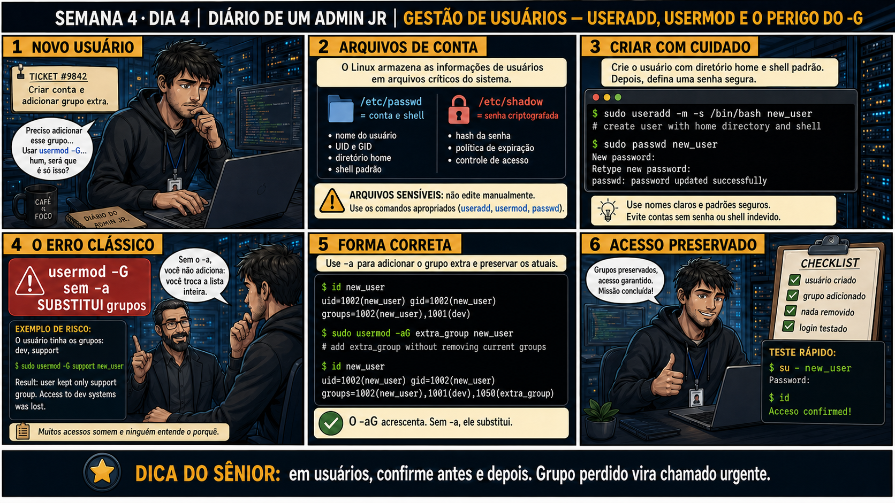

DIARIO DE UM ADMIN JR. | FASE 1 — LINUX, DO BÁSICO AO AVANÇADO
Antes de começar — 20 segundos de memória (Dia 3)
1. Ontem, qual comando mostra a lista de pacotes que SERIAM afetados por um upgrade, sem executar nada de verdade? 2. Ontem o perigo era confundir install (pontual) com upgrade (sistema inteiro). Hoje existe um perigo com a mesma forma, escondido numa única letra — qual é?
1.apt list --upgradable. 2.usermod -aG (adiciona um grupo) contra usermod -G sem o -a (substitui TODOS os grupos extras do usuário). É o mesmo formato de risco de ontem: uma opção pontual e uma que afeta muito mais do que parece à primeira vista.
🔗 Conecta com ontem: instalar pacote com escopo mínimo. Hoje o mesmo cuidado de
escopo se aplica a pessoas: criar conta e adicionar a UM grupo específico — sem acidentalmente apagar todos
os outros acessos que essa pessoa já tinha.
🔓 Privilégio de hoje: criar e gerenciar contas de usuário com segurança. Você
ganha autorização pra usar useradd e usermod — sempre confirmando id antes e depois de qualquer mudança de
grupo.
Semana 4 · Dia 4 | Nível Júnior
Gestão de Usuários: useradd, usermod e o Perigo do -G
usermod -G sem -a não adiciona um grupo, apaga todos os outros
ANTES DE ALTERAR, OBSERVE. DEPOIS DE ALTERAR, VALIDE.

1. O chamado
#9842PRIORIDADE MÉDIA10:10aberto por: gestor da equipe
host: srv-app-01 · serviço: contas de usuário
"Criar conta pro novo colega e adicionar ele ao grupo de suporte, sem mexer no resto."
Seu dedo está perto de digitar usermod -G suporte novo_user. O que esse comando faz de diferente do que parece?
💡 Passa o mouse nas palavras destacadas pra ver uma dica rápida — clica se quiser a explicação completa com analogia.
2. O sênior te conta
🧑🏫 antes dos termos técnicos, a história de hoje
Hoje o ticket pedia pra criar conta pra um colega novo e adicionar ele a um grupo extra. O Júnior já
tinha o dedo perto de digitar usermod -G suporte novo_user — comando que ele achava que
"adicionava um grupo". Parei ele antes de apertar Enter: "esse comando não adiciona nada. Sem o -a, ele
SUBSTITUI a lista inteira de grupos que a pessoa tem."
Mostrei um exemplo real, de um erro que já derrubou acesso de gente em ambiente de verdade: um usuário
com grupos desenvolvimento e suporte, depois de um usermod -G suporte
sem -a, ficou só com suporte — o grupo desenvolvimento simplesmente sumiu, silenciosamente,
sem erro nenhum na tela. É trocar todos os crachás de departamento da pessoa por um só, mesmo que ela
precisasse dos outros também.
A diferença de uma única letra — o -a — é o que separa "adicionar" de "substituir". Ensinei
o hábito: sempre usermod -aG, nunca -G sozinho, e sempre rodar id
antes E depois de qualquer mudança de grupo, pra ter certeza absoluta do que mudou. E teve mais um
detalhe que corrigi: a senha não fica em /etc/passwd, apesar do nome — fica separada, em
/etc/shadow, com permissão bem mais restrita.
3. Decodificador de conceitos
Clica em qualquer termo pra ver a definição completa e uma analogia do dia a dia:
4. Ferramentas e leitura da evidência
Comando
O que observar e por que importa
useradd -m -s /bin/bash novo_user
Cria a conta com diretório home e shell padrão definidos corretamente.
sudo passwd novo_user
Define uma senha, sem a qual a conta não consegue autenticar.
id novo_user (antes e depois)
Confirma exatamente quais grupos o usuário tem, antes de qualquer mudança e depois pra validar.
$ id novo_user
uid=1002(novo_user) gid=1002(novo_user) grupos=1002(novo_user),1001(desenvolvimento)
$ sudo usermod -aG grupo_extra novo_user
$ id novo_user
uid=1002(novo_user) gid=1002(novo_user) grupos=1002(novo_user),1001(desenvolvimento),1050(grupo_extra)
5. Laboratório guiado — pegue na mão, comando por comando
Segurança: execute os testes apenas em VM descartável e confirme nomes de discos, hosts e arquivos antes de cada comando.
CENÁRIOAção: Crie os três grupos de teste que o laboratório vai usar, antes de tentar adicionar o usuário a eles.
Resultado esperado: os três grupos listados pelo getent, confirmando que existem antes do próximo passo.
Por que fizemos isso:usermod -aG não cria grupos, só adiciona um usuário a grupos que já existem — sem esse passo, o próximo comando falha por um motivo que não tem nada a ver com a lição de hoje.
Cilada comum: só em VM descartável — criar grupos de teste com nomes genéricos pode colidir com grupos reais em servidores de produção.
Se o seu resultado foi diferente
"groupadd: group 'grupo1' already exists" → sobra de uma execução anterior do laboratório — pode seguir em frente normalmente, o grupo já está pronto.
Ação: Crie um usuário de teste com home e shell corretos, e defina uma senha.
Resultado esperado: conta criada com home próprio, senha definida com sucesso.
Por que fizemos isso: -m garante o diretório home, -s define o shell certo — sem esses dois, o usuário pode não conseguir logar direito ou cair num shell errado.
Cilada comum: esquecer o passwd depois do useradd — a conta existe mas fica sem senha, incapaz de autenticar.
Ação: Adicione o usuário a dois grupos diferentes, um de cada vez, sempre com -aG.
Resultado esperado: id teste_user mostra os dois grupos acumulados, nenhum perdido.
Por que fizemos isso: ver os grupos se ACUMULANDO, um por um, é o comportamento correto e esperado que você vai usar sempre em produção.
Cilada comum: tentar adicionar os dois grupos numa linha só sem revisar a sintaxe — `usermod -aG grupo1,grupo2` funciona, mas `-aG grupo1 -aG grupo2` não é válido.
Se o seu resultado foi diferente
"usermod: group 'grupo1' does not exist" → os grupos de teste ainda não foram criados. Volte ao passo de setup e rode sudo groupadd grupo1 grupo2 grupo3 antes de continuar.
Ação: Reproduza deliberadamente o erro: rode -G sem -a e veja os outros grupos sumirem.
sudo usermod -G grupo3 teste_user
id teste_user
Resultado esperado: apenas o grupo primário e o terceiro grupo restam — demonstração prática do risco.
Por que fizemos isso: ver o erro acontecer de propósito, num ambiente seguro, fixa a lição de um jeito que nenhuma explicação teórica consegue — você viu os grupos sumirem com os próprios olhos.
Cilada comum: fazer esse teste num usuário real de produção "só pra confirmar" — sempre reproduza erros perigosos só em ambiente descartável.
🧑🏫 Aqui entra o Mentor (em breve): se você precisar recuperar os grupos perdidos por um erro de -G, este é o ponto onde o chat com o Sênior-IA vai ajudar a corrigir.
Ação: Corrija o erro, restaurando os grupos perdidos com -aG.
Resultado esperado: todos os grupos originais restaurados, confirmados com id.
Por que fizemos isso: essa correção só é possível porque você anotou os grupos ANTES do erro — sem esse registro prévio, restaurar seria adivinhação.
Cilada comum: tentar corrigir de memória, sem ter anotado os grupos originais — é exatamente por isso que id antes é indispensável, não opcional.
Ação: Documente usuário criado, grupos adicionados, erro cometido e corrigido, validação final.
# não é comando de shell — é o registro final
# ex: "Usuário: teste_user. Grupos: grupo1, grupo2. Erro: -G sem -a removeu ambos. Correção: -aG restaurou os dois. Validado com id."
Resultado esperado: registro completo reproduzindo o painel 6 da prancha de hoje.
Por que fizemos isso: registrar até o erro cometido (e corrigido) no laboratório é mais valioso que só documentar o resultado final — mostra o raciocínio completo de diagnóstico.
Cilada comum: documentar só o estado final "correto", sem mencionar o erro reproduzido — perder essa parte perde o valor pedagógico do exercício.
CENÁRIOAção: Remova o usuário de teste e os três grupos, deixando o servidor como estava antes da aula.
Resultado esperado: mensagem de erro do sistema confirmando que teste_user não existe mais.
Por que fizemos isso: contas e grupos de teste esquecidos numa VM são exatamente o tipo de achado confuso numa auditoria de segurança meses depois — ninguém lembra por que "grupo1" existe.
Cilada comum: rodar groupdel antes do userdel pode falhar se o grupo ainda for o grupo primário de algum usuário — sempre remova o usuário primeiro.
Se o seu resultado foi diferente
"userdel: user teste_user is currently used by process" → encerre a sessão dele ou use sudo userdel -rf teste_user (força a remoção — só em VM de teste).
6. Antes de ver as opções — tenta responder
🧠 Recall ativo: qual é a diferença exata entre usermod -G grupo usuario e
usermod -aG grupo usuario?
-G sozinho
SUBSTITUI todos os grupos secundários pelo informado, apagando os outros.
-aG
ADICIONA o grupo mantendo os que já existiam. A diferença de uma letra já derrubou acesso de gente
inteira em ambientes reais.
QUESTÃO 1 de 3
7. Questão comentada — clica numa alternativa
Você precisa criar uma conta pro novo colega e adicionar ele a um grupo extra,
sem afetar nenhum acesso que ele já tenha. Qual é a sequência correta?
💡 Analogia do Sênior para Fixar: O comando 'useradd -m' é como criar a conta do hóspede e entregar a chave do quarto: o parâmetro -m cria automaticamente a pasta /home/usuario com os arquivos base do /etc/skel.
QUESTÃO 2 de 3 — cenário de erro real
7.1 Um colega rodou usermod -G suporte por engano, sem o -a — o que aconteceu?
Antes: grupos=1002(novo_user),1001(desenvolvimento),1050(suporte). Depois de
usermod -G suporte novo_user (sem -a): grupos=1002(novo_user),1050(suporte).
O que aconteceu com o acesso desse usuário?
💡 Analogia do Sênior para Fixar: O arquivo '/etc/passwd' e '/etc/shadow' são o crachá público e o cofre de senhas: o passwd diz quem existe; o shadow guarda os hashes criptografados com acesso restrito ao root.
QUESTÃO 3 de 3 — detalhe que confunde todo iniciante
7.2 "/etc/passwd guarda a senha do usuário, certo?"
Um colega acredita que a senha criptografada de cada usuário fica armazenada em /etc/passwd,
já que é ali que a conta está listada.
Essa suposição está correta?
💡 Analogia do Sênior para Fixar: Bloquear uma conta com 'usermod -L' é como colocar uma fita adesiva na fechadura: impede o login sem apagar os arquivos pessoais do usuário no disco.
8. Procedimento profissional
Confirme os grupos atuais do usuário com id antes de qualquer mudança.
Crie a conta com useradd -m -s /bin/bash e defina senha com passwd.
Adicione grupos SEMPRE com usermod -aG, nunca -G sozinho.
Confirme os grupos depois com id, comparando com o estado anterior.
Teste o acesso real (su - usuario, id) antes de fechar o chamado.
Prevenção — o que evita repetir esse tipo de problema
Padronize um alias ou script wrapper que só aceita usermod com -aG, bloqueando o uso
acidental de -G sozinho no time — a diferença de uma letra não deveria depender só de memória humana.
Documente no runbook o hábito de sempre rodar id antes e salvar a saída, pra qualquer correção futura ter
um "estado conhecido" pra restaurar.
9. Validação e encerramento
Grupos foram confirmados com id antes e depois de toda mudança.
usermod -aG foi usado sempre, nunca -G sozinho, pra adicionar grupos.
A senha foi definida corretamente, permitindo login.
O acesso real foi testado antes de considerar o chamado encerrado.
Rollback e limites
Se um -G sem -a já foi executado por engano, o rollback é restaurar manualmente
cada grupo perdido com usermod -aG, um de cada vez — só é possível se você sabia exatamente quais grupos o
usuário tinha antes, reforçando por que confirmar com id ANTES é indispensável.
💡 Sobre repetição espaçada: "confirme antes e depois de qualquer mudança de
acesso" conecta com chmod/chown da Semana 2 — mesmo princípio, agora aplicado a contas de usuário. O Anki
vai conectar os dois.
10. Resposta final
Alternativa correta: B. Nesta aula, a decisão correta foi
useradd -m -s /bin/bash novo_user, seguido de usermod -aG grupo_extra novo_user. O ponto central do
caso é este: em usuários, confirme antes e depois — grupo perdido vira chamado urgente.
🔓 O que você desbloqueou hoje
Capacidade de gerenciar contas de usuário com segurança, sem apagar acesso por
acidente. Amanhã fecha a Semana 4: um diagnóstico combinado, juntando todo o toolkit de processos, logs e
acesso construído nas últimas duas semanas.